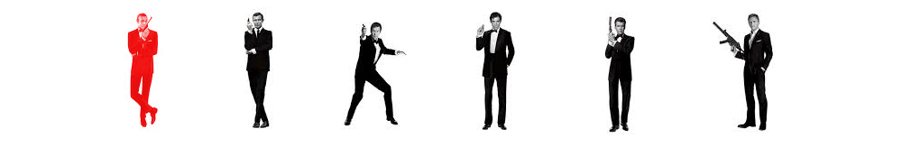
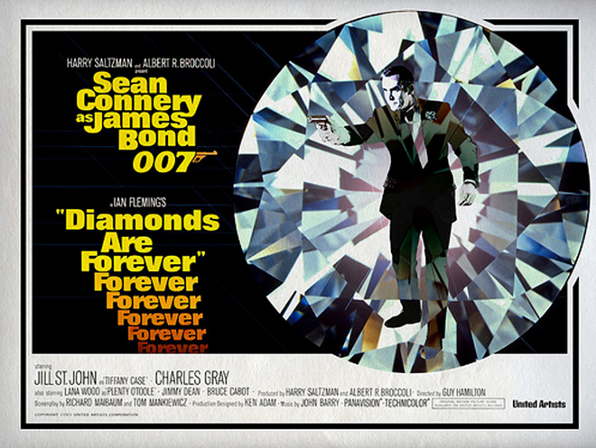
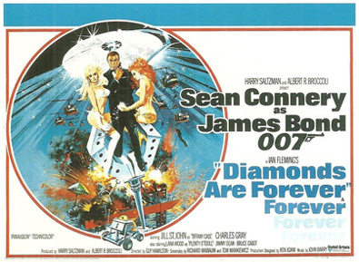
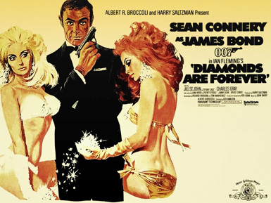
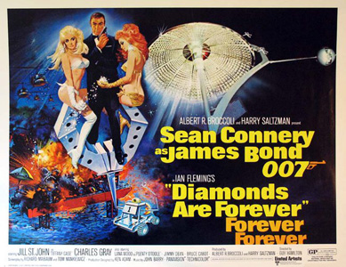
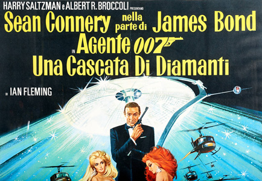

Albert R. Broccoli
Richard Maibaum
Tom Mankiewicz
John Holmes
Mr. Wint: Blofeld's henchman.
James Bond—Agent 007—pursues Ernst Stavro Blofeld out of revenge for the death of his wife, hunting down SPECTRE operatives across the world. He eventually finds him at a facility where Blofeld look-alikes are being created through plastic surgery. Bond kills a test subject, and later the "real" Blofeld, by drowning him in a pool of superheated mud.
While assassins Mr. Wint and Mr. Kidd systematically kill several diamond smugglers, M suspects that South African diamonds are being stockpiled to depress prices by dumping, and orders Bond to uncover the smuggling ring. Disguised as professional smuggler and assassin Peter Franks, Bond travels to Amsterdam to meet contact Tiffany Case. The real Franks shows up on the way, but Bond intercepts and kills him, then switches IDs to make it seem as though Franks is Bond. Case and Bond then go to Los Angeles, smuggling the diamonds inside Franks' corpse.
At the airport Bond meets his CIA ally Felix Leiter, then travels to Las Vegas. At a funeral home, Franks' body is cremated and the diamonds are passed on to another smuggler, Shady Tree. Bond is nearly killed by Wint and Kidd when they put him into a coffin and send it to a cremation oven, but Tree stops the process when he discovers that the diamonds in Franks' body were fakes planted by Bond and the CIA.
Bond tells Leiter to ship him the real diamonds. Bond then goes to the Whyte House, a casino-hotel owned by the reclusive billionaire Willard Whyte, where Tree works as a stand-up comedian. Bond watches Tree's act and afterwards goes to his dressing room, where he discovers there that Tree has been killed by Wint and Kidd, who did not know that the diamonds were fake.
At the craps table Bond meets the opportunistic Plenty O'Toole; after gambling, he brings her to his room. Gang members ambush them, throwing O'Toole out of a window and into a pool. Bond spends the rest of the night with Tiffany Case, instructing her to retrieve the real diamonds at the Circus Circus casino.
Tiffany reneges on her deal to meet back with Bond and instead flees, passing off the diamonds to the next smuggler. However, seeing that O'Toole was killed (after being mistaken for her), Tiffany changes her mind. She drives Bond to the airport, where the diamonds are given to Whyte's casino manager, Bert Saxby, who is followed to a remote facility. Bond enters the apparent destination of the diamonds: a research laboratory owned by Whyte, where a satellite is being built by Professor Metz, a laser refraction specialist. Bond fakes Metz by telling him he is Klaus Hergersheimer, a technician he met in the facility. His cover is blown when the real Hergersheimer shows up. Bond attempts to remain hidden, but is seen by a technician. He manages to evade the security guards by stealing a moon buggy and reunites with Tiffany. The laboratory report Bond's activity to the sheriff's office. Bond and Tiffany make their way back to Las Vegas; they are seen there by the Las Vegas police, who engage in a car chase, but Bond manages to evade all the cars.
Bond later scales the walls to the Whyte House's top floor to confront Whyte. He is instead met by two identical Blofelds, who use an electronic device to sound like Whyte. Bond kills one of the Blofelds, which turns out to be a look-alike. The real Blofeld pulls a gun on Bond, and instructs him into a elevator, where he is knocked out by gas. He is picked up by Wint and Kidd, and taken out to Las Vegas Valley, where he is placed in a pipeline and left to die. The pipeline is buried the next morning.
Bond escapes and calls Blofeld, using a similar electronic device made by Q to pose as Saxby. He finds out Whyte is kept at his summer house outside the city and goes there with Felix and the CIA. After a brief battle with Whyte's female bodyguards Bambi and Thumper, they rescue Whyte. Saxby attempts to kill Bond outside the summer house, but is fatally shot during the ensuing gunfight. In the meantime, Blofeld abducts Case. With the help of Whyte, Bond raids the lab and uncovers Blofeld's plot to create a laser satellite using the diamonds, which by now has already been sent into orbit. With the satellite, Blofeld destroys nuclear weapons in China, the Soviet Union and the United States, then proposes an international auction for global nuclear supremacy.
Whyte identifies an oil platform off the coast of Baja California as Blofeld's likely base of operations. After Bond's attempt to change the cassette containing the satellite control codes fails due to a mistake by Tiffany, a helicopter attack on the oil rig is launched by Leiter and the CIA.
Blofeld tries to escape in a midget submarine, but Bond gains control of the submarine's launch crane and crashes the sub into the control room, causing both the satellite control and the base to be destroyed. Bond and Tiffany then head for Britain on a cruise ship, where Wint and Kidd pose as room-service stewards and attempt to kill them with a hidden bomb. Bond turns the tables on them, causing Kidd to hurl himself overboard after being set aflame and Wint to detonate with the bomb after being thrown overboard. Tiffany then asks James Bond a sensitive question: "How the hell do we get those diamonds down again?"
The obvious cause of the question is the diamonds in the satellite, which can be seen by Bond and Tiffany as a speck in the night sky.
George Lazenby was originally offered a contract for seven Bond films, but declined and left after just one, On Her Majesty's Secret Service, on the advice of his agent. Producers contemplated replacing him with John Gavin (though Batman star Adam West and Burt Reynolds had also been considered); Reynolds and West had stated that Bond should be not be played by an American actor. Michael Gambon rejected an offer, telling Albert Broccoli that he was "in terrible shape." United Artists' chief David Picker was unhappy with this decision and made it clear that Connery was to be enticed back to the role and that money was no object. When approached about resuming the role of Bond, Connery demanded the fee of £1.25 million. To entice the actor to play Bond once more, United Artists offered to back two films of his choice. After both sides agreed to the deal, Connery used the fee to establish the Scottish International Education Trust, where Scottish artists could apply for funding without having to leave their country to pursue their careers. The first film made under Connery's deal was The Offence, directed by his friend Sidney Lumet. The second was to be an adaptation of Macbeth by William Shakespeare, using only Scottish actors and in which Connery himself would play the title role. This project was abandoned because Roman Polanski's version of Macbeth was already in production.
Charles Gray was cast as villain Ernst Stavro Blofeld, after playing a Bond ally named Dikko Henderson in You Only Live Twice (1967). David Bauer, who plays Morton Slumber, had also previously appeared in that film, uncredited, as an American diplomat.
Jazz musician Putter Smith was invited by Harry Saltzman to play Mr. Kidd, after a Thelonious Monk Band show. Musician Paul Williams was originally cast as Mr. Wint. When he couldn't agree with the producers on compensation, Bruce Glover replaced him. Glover said he was surprised at being chosen, because at first producers said he was too normal and that they wanted a deformed, Peter Lorre-like actor.
Film star Bruce Cabot, who played the part of Bert Saxby, died the following year. Jimmy Dean was cast as Willard Whyte after Saltzman saw a presentation of him. Dean was very worried about playing a Howard Hughes pastiche, because he was an employee of Hughes at the Desert Inn.
Raquel Welch, Jane Fonda and Faye Dunaway were considered for the role of Tiffany Case. Jill St. John had originally been offered the part of Plenty O'Toole, but landed the female lead after Sidney Korshak, who assisted the producers in filming in Las Vegas locations, recommended his client St. John, who became the first American Bond girl. Lana Wood was cast as Plenty O'Toole, following a suggestion of screenwriter Tom Mankiewicz. Denise Perrier, Miss World 1953, played "Marie", the woman in the bikini who is forced by Bond to disclose the location of Blofeld.
A cameo appearance by Sammy Davis, Jr. playing on the roulette table was filmed, but his scene was eventually deleted.
Filming began on 5 April 1971, with the South African scenes actually shot in the desert near Las Vegas, and finished on 13 August 1971. The film was shot primarily in the US, with locations including the Los Angeles International Airport, Universal City Studios and eight hotels of Las Vegas. Besides the Pinewood Studios in Buckinghamshire, other places in England were Dover and Southampton. The climactic oil rig sequence was shot off the shore of Oceanside, California. Other filming locations included Cap D'Antibes in France for the opening scenes, Amsterdam and Lufthansa's hangar at Frankfurt Airport, Germany.
Filming in Las Vegas took place mostly in hotels owned by Howard Hughes, since he was a friend of Albert Broccoli. Getting the streets empty to shoot was achieved through the collaboration of Hughes, the Las Vegas police and shopkeepers association. The Las Vegas Hilton doubled for the Whyte House, and since the owner of the Circus Circus was a Bond fan, he allowed the Circus to be used on film and even made a cameo. The cinematographers said filming in Las Vegas at night had an advantage: no additional illumination was required due to the high number of neon lights. Sean Connery made the most of his time on location in Las Vegas. "I didn't get any sleep at all. We shot every night, I caught all the shows and played golf all day. On the weekend I collapsed – boy, did I collapse. Like a skull with legs." He also played the slot machines, and once delayed a scene because he was collecting his winnings. While shooting in Las Vegas Connery dated his co-star Lana Wood.
The site used for the Willard Whyte Space Labs (where Bond gets away in the Moon Buggy) was actually, at that time, a Johns-Manville gypsum plant located just outside Las Vegas. The home of Kirk Douglas was used for the scene in Tiffany's house, while the Elrod House in Palm Springs, designed by John Lautner, became Willard Whyte's house. The exterior shots of the Slumber mortuary were of the Palm Mortuary in Henderson, Nevada. The interiors were a set constructed at Pinewood Studios, where Ken Adam imitated the real building's lozenge-shaped stained glass window in its nave. During location filming, Adam visited several funeral homes in the Las Vegas area, the inspiration behind the gaudy design of the Slumber mortuary (the use of tasteless Art Nouveau furniture and Tiffany lamps) came from these experiences. Production wrapped with the crematorium sequence, on 13 August 1971.
Since the car chase in Las Vegas would have many car crashes, the filmmakers had an arrangement with Ford to use their vehicles. Ford's only demand was that Sean Connery had to drive the 1971 Mustang Mach 1 which serves as Tiffany Case's car. The Moon Buggy was inspired by the actual NASA vehicle, but with additions such as flailing arms since the producers didn't find the design "outrageous" enough. Built by custom car fabricator Dean Jeffries on a rear-engined Corvair chassis, it was capable of road speeds. The fibreglass tyres had to be replaced during the chase sequence because the heat and irregular desert soil ruined them.
Hamilton had the idea of making a fight scene inside a lift, which was choreographed and done by Sean Connery and stuntman Joe Robinson. The car chase where the red Mustang comes outside of the narrow street on the opposite side in which it was rolled, was filmed over three nights on Fremont Street in Las Vegas. The alleyway car roll sequence is actually filmed in two locations. The entrance was at the car park at Universal Studios and the exit was at Fremont Street, Las Vegas. It eventually inspired a continuity mistake, as the car enters the alley on the right side tires and exits the street driving on the left side. During the car chase where the police are chasing Bond in a small parking lot the Mustang was to jump a small ramp over several cars. Bill Hickman (Bullitt fame) did this stunt; the hired stunt driver they had couldn't perform this and wrecked two or three cars. The stunt team had only one automobile left so they called Hickman – who drove for hours to the location, jumped into the Mustang, and did the stunt in one take. While filming the scene of finding Plenty O'Toole drowned in Tiffany's swimming pool, Lana Wood actually had her feet loosely tied to a cement block on the bottom. Film crew members held a rope across the pool for her, with which she could lift her face out of the water to breathe between takes. The pool's sloping bottom made the block slip into deeper water with each take. Eventually, Wood was submerged but was noticed by on-lookers and rescued before actually drowning. Wood, being a certified diver, took some water but remained calm during the ordeal, although she later admitted to a few "very uncomfortable moments and quite some struggling until they pulled me out."



